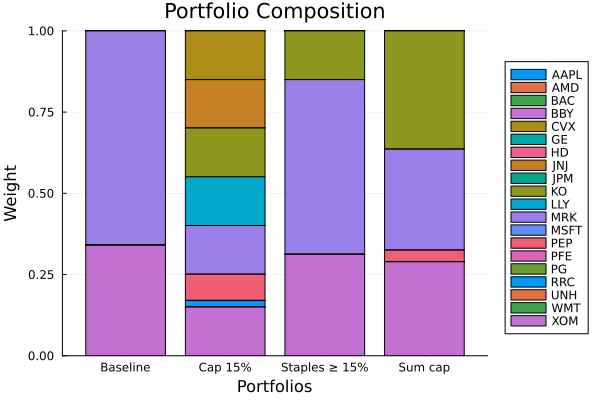

The source files can be found in examples/.
Linear and group constraints
A mandate is rarely "optimise freely". You cap single-name concentration, hold sector bands, keep one group bigger than another, and avoid dust positions. PortfolioOptimisers.jl expresses all of these as constraints on the JuMPOptimiser, layered on top of whatever objective and prior you use. This deep dive works through the linear and group constraints — weight bounds, per-member vs group-sum limits, relative and sum constraints — and shows where the boundary to mixed-integer constraints (thresholds, cardinality) lies.
The unifying idea is the UniverseSets: you name assets and groups once, then every constraint refers to those names. The same "name op value" string grammar drives both the linear constraints here and the views in the prior examples.
Reach for these whenever a real mandate dictates the shape of the book: a 5% single-name cap, a 20% sector ceiling, "healthcare at least as big as energy", "no position under 2%". They are convex (except thresholds and cardinality, which need a MIP solver) and compose freely with any objective, risk measure, and prior. For cost-bearing limits — turnover, fees, tracking — see the sibling pages in this group.
using PortfolioOptimisers, CSV, TimeSeries, DataFrames, PrettyTables, Clarabel, StatsPlots, GraphRecipesresfmt = (v, i, j) -> begin return if j == 1 v else isa(v, AbstractFloat) ? "$(round(v*100, digits=3)) %" : v endend;1. ReturnsResult data
The same S&P 500 slice as the other examples.
X = TimeArray(CSV.File(joinpath(@__DIR__, "..", "SP500.csv.gz")); timestamp = :Date)[(end - 252):end]rd = prices_to_returns(X)pr = prior(EmpiricalPrior(), rd)slv = Solver(; name = :clarabel, solver = Clarabel.Optimizer, settings = Dict("verbose" => false), check_sol = (; allow_local = true, allow_almost = true))rf = 4.2 / 100 / 2520.00016666666666666672. Naming assets and groups
UniverseSets maps names to members. The nx key holds every asset; the rest are the groups — here, sectors — that constraints will reference.
sets = UniverseSets(; dict = Dict("nx" => rd.nx, "tech" => ["AAPL", "AMD", "MSFT"], "financials" => ["BAC", "JPM"], "energy" => ["CVX", "XOM", "RRC"], "healthcare" => ["JNJ", "LLY", "MRK", "PFE", "UNH"], "staples" => ["KO", "PEP", "PG", "WMT"], "consumer" => ["BBY", "HD"], "industrial" => ["GE"]))UniverseSets
xkey ┼ String: "nx"
uxkey ┼ String: "ux"
fkey ┼ String: "nf"
ufkey ┼ String: "uf"
zkey ┼ String: "nz"
dict ┴ Dict{String, Vector{String}}: Dict("nx" => ["AAPL", "AMD", "BAC", "BBY", "CVX", "GE", "HD", "JNJ", "JPM", "KO", "LLY", "MRK", "MSFT", "PEP", "PFE", "PG", "RRC", "UNH", "WMT", "XOM"], "financials" => ["BAC", "JPM"], "industrial" => ["GE"], "tech" => ["AAPL", "AMD", "MSFT"], "healthcare" => ["JNJ", "LLY", "MRK", "PFE", "UNH"], "staples" => ["KO", "PEP", "PG", "WMT"], "energy" => ["CVX", "XOM", "RRC"], "consumer" => ["BBY", "HD"])
Our baseline is an unconstrained maximum-ratio portfolio. On this one-year slice it is starkly concentrated — it piles into the two sectors with the best realised risk-adjusted return and ignores the rest. That makes it the perfect punching bag for constraints.
res_base = optimise(MeanRisk(; obj = MaximumRatio(; rf = rf), opt = JuMPOptimiser(; pe = pr, slv = slv)))sector_weight(w, g) = sum(w[i] for i in eachindex(w) if rd.nx[i] in sets.dict[g])sectors = ["tech", "financials", "energy", "healthcare", "staples", "consumer", "industrial"]pretty_table(DataFrame("Sector" => sectors, "Baseline" => [sector_weight(res_base.w, g) for g in sectors]); formatters = [resfmt], title = "Baseline max-ratio: sector exposure")Baseline max-ratio: sector exposure
┌────────────┬──────────┐
│ Sector │ Baseline │
│ String │ Float64 │
├────────────┼──────────┤
│ tech │ 0.0 % │
│ financials │ 0.0 % │
│ energy │ 34.02 % │
│ healthcare │ 65.979 % │
│ staples │ 0.001 % │
│ consumer │ 0.0 % │
│ industrial │ 0.0 % │
└────────────┴──────────┘3. Weight bounds: capping concentration
The simplest constraint is a per-asset bound through wb. A global WeightBounds with ub = 0.15 forbids any single name from exceeding 15%, which forces the optimiser to hold more names — the book goes from a couple of positions to spread across the book.
res_cap = optimise(MeanRisk(; obj = MaximumRatio(; rf = rf), opt = JuMPOptimiser(; pe = pr, slv = slv, wb = WeightBounds(; lb = 0.0, ub = 0.15))))MeanRiskResult
jr ┼ JuMPOptimisationResult
│ pa ┼ ProcessedJuMPOptimiserAttributes
│ │ pr ┼ LowOrderPrior
│ │ │ X ┼ 252×20 Matrix{Float64}
│ │ │ o_X ┼ nothing
│ │ │ mu ┼ 20-element Vector{Float64}
│ │ │ sigma ┼ 20×20 Matrix{Float64}
│ │ │ chol ┼ nothing
│ │ │ w ┼ nothing
│ │ │ ens ┼ nothing
│ │ │ kld ┼ nothing
│ │ │ ow ┼ nothing
│ │ │ rr ┼ nothing
│ │ │ fpr ┼ nothing
│ │ │ Z ┴ nothing
│ │ wb ┼ WeightBounds
│ │ │ lb ┼ 20-element StepRangeLen{Float64, Base.TwicePrecision{Float64}, Base.TwicePrecision{Float64}, Int64}
│ │ │ ub ┴ 20-element StepRangeLen{Float64, Base.TwicePrecision{Float64}, Base.TwicePrecision{Float64}, Int64}
│ │ lt ┼ nothing
│ │ st ┼ nothing
│ │ lcsr ┼ nothing
│ │ ctr ┼ nothing
│ │ gcardr ┼ nothing
│ │ sgcardr ┼ nothing
│ │ smtx ┼ nothing
│ │ sgmtx ┼ nothing
│ │ slt ┼ nothing
│ │ sst ┼ nothing
│ │ sglt ┼ nothing
│ │ sgst ┼ nothing
│ │ tn ┼ nothing
│ │ fees ┼ nothing
│ │ plr ┼ nothing
│ │ ret ┼ ArithmeticReturn
│ │ │ settings ┼ JuMPReturnsSettings
│ │ │ │ scale ┼ Float64: 1.0
│ │ │ │ lb ┼ nothing
│ │ │ │ rte ┼ Bool: true
│ │ │ │ fee ┼ Bool: true
│ │ │ │ mic ┴ Bool: true
│ │ │ ucs ┼ nothing
│ │ │ mu ┴ 20-element Vector{Float64}
│ │ sca ┼ SumScalariser()
│ │ imsk ┴ nothing
│ retcode ┼ OptimisationSuccess
│ │ res ┴ Dict{Any, Any}: Dict{Any, Any}()
│ sol ┼ JuMPOptimisationSolution
│ │ w ┴ 20-element Vector{Float64}
│ model ┼ A JuMP Model
│ │ ├ solver: Clarabel
│ │ ├ objective_sense: MIN_SENSE
│ │ │ └ objective_function_type: QuadExpr
│ │ ├ num_variables: 22
│ │ ├ num_constraints: 6
│ │ │ ├ AffExpr in MOI.EqualTo{Float64}: 2
│ │ │ ├ Vector{AffExpr} in MOI.Nonnegatives: 1
│ │ │ ├ Vector{AffExpr} in MOI.Nonpositives: 1
│ │ │ ├ Vector{AffExpr} in MOI.SecondOrderCone: 1
│ │ │ └ VariableRef in MOI.GreaterThan{Float64}: 1
│ │ └ Names registered in the model
│ │ └ :G, :bgt, :cdev_soc_1, :dev_1, :k, :lw, :obj_expr, :ohf, :ret, :ret_1, :ret_vec, :risk, :risk_vec, :sc, :so, :sr_ret, :variance_flag, :variance_risk_1, :w, :w_lb, :w_ub
r ┼ Variance
│ settings ┼ RiskMeasureSettings
│ │ scale ┼ Float64: 1.0
│ │ ub ┼ nothing
│ │ rke ┴ Bool: true
│ sigma ┼ 20×20 Matrix{Float64}
│ chol ┼ nothing
│ rc ┼ nothing
│ alg ┴ SquaredSOCRiskExpr()
fb ┴ nothing
4. Per-member vs group-sum bounds — an important distinction
There are two different things you might mean by "the staples bound". A WeightBoundsEstimator with a group key applies the bound to each member of the group; a LinearConstraintEstimator bounds the group sum. They are not the same: with four staples names, WeightBoundsEstimator(lb = ["staples" => 0.15], ub = nothing) forces each of them to at least 15% — 60% in total — whereas LinearConstraintEstimator(val = ["staples >= 0.15"]) asks only that the four together reach 15%.
res_member = optimise(MeanRisk(; obj = MaximumRatio(; rf = rf), opt = JuMPOptimiser(; pe = pr, slv = slv, sets = sets, wb = WeightBoundsEstimator(; lb = ["staples" => 0.15], ub = nothing))))res_groupsum = optimise(MeanRisk(; obj = MaximumRatio(; rf = rf), opt = JuMPOptimiser(; pe = pr, slv = slv, sets = sets, lcse = LinearConstraintEstimator(; val = ["staples >= 0.15"]))))pretty_table(DataFrame("Interpretation" => ["per-member (each ≥ 15%)", "group-sum (total ≥ 15%)"], "Staples total" => [sector_weight(res_member.w, "staples"), sector_weight(res_groupsum.w, "staples")]); formatters = [resfmt], title = "Same number, two very different constraints")Same number, two very different constraints
┌─────────────────────────┬───────────────┐
│ Interpretation │ Staples total │
│ String │ Float64 │
├─────────────────────────┼───────────────┤
│ per-member (each ≥ 15%) │ 60.0 % │
│ group-sum (total ≥ 15%) │ 15.0 % │
└─────────────────────────┴───────────────┘Reach for the WeightBoundsEstimator form when the rule is genuinely per-name ("every position in this list at least/at most x"), and the LinearConstraintEstimator form when it is a sector budget.
5. Linear group constraints: sums and relations
LinearConstraintEstimator is the general tool. Its strings combine group and asset names with +, -, scalar multiples, and the == / <= / >= operators, so you can write sum caps ("the two hot sectors together no more than 60%") and relative constraints ("healthcare at least twice staples", "tech ≤ energy"). A sum cap on the baseline's two favoured sectors forces 40% of the book into everything it had ignored.
res_sum = optimise(MeanRisk(; obj = MaximumRatio(; rf = rf), opt = JuMPOptimiser(; pe = pr, slv = slv, sets = sets, lcse = LinearConstraintEstimator(; val = ["healthcare + energy <= 0.6", "tech <= financials"]))))pretty_table(DataFrame("Sector" => sectors, "Baseline" => [sector_weight(res_base.w, g) for g in sectors], "Sum-capped" => [sector_weight(res_sum.w, g) for g in sectors]); formatters = [resfmt], title = "Sum cap (healthcare + energy ≤ 60%, tech ≤ financials)")Sum cap (healthcare + energy ≤ 60%, tech ≤ financials)
┌────────────┬──────────┬────────────┐
│ Sector │ Baseline │ Sum-capped │
│ String │ Float64 │ Float64 │
├────────────┼──────────┼────────────┤
│ tech │ 0.0 % │ 0.0 % │
│ financials │ 0.0 % │ 0.0 % │
│ energy │ 34.02 % │ 28.935 % │
│ healthcare │ 65.979 % │ 31.065 % │
│ staples │ 0.001 % │ 40.0 % │
│ consumer │ 0.0 % │ 0.0 % │
│ industrial │ 0.0 % │ 0.0 % │
└────────────┴──────────┴────────────┘6. Thresholds and cardinality need a MIP solver
Two common constraints are not convex and so cannot be solved by Clarabel alone:
- Thresholds (
ThresholdEstimator, thelt/stkeywords) — "if you hold a name at all, hold at least x" — are semi-continuous (a weight is either zero or above the floor). - Cardinality (
card,gcarde) — "hold at most k names" — is combinatorial.
Both require a mixed-integer-capable solver (e.g. Pajarito with Clarabel as the continuous solver and HiGHS for the MIP). Passing a threshold to a continuous-only solver returns a failed retcode rather than a silent wrong answer. See Budget Constraints for the MIP solver setup.
Every constraint on this page is written in asset names. A mandate written in factor names — "at most 10% momentum", "market-neutral to value" — is the same linear form in a different basis, and is covered in Factor Exposure Constraints.
7. Comparing the constraints
Same prior, same objective — each constraint reshapes the book differently. The baseline's two-sector concentration gives way to progressively more diversified portfolios.
results = [res_base, res_cap, res_groupsum, res_sum]labels = ["Baseline", "Cap 15%", "Staples ≥ 15%", "Sum cap"]pretty_table(DataFrame(["Asset" => rd.nx, [labels[i] => results[i].w for i in eachindex(results)]...]); formatters = [resfmt], title = "Asset weights under each constraint")plot_stacked_bar_composition(results, rd; xticks = (1:length(labels), labels))
This page was generated using Literate.jl.